Hello, Hippy Happy World!
行きたい場所というのは「行こう」と決意すれば意外と行けるものだと思う。
これから行きたい場所を備忘録もかねてまとめてみた。
Sakhalin
Russia
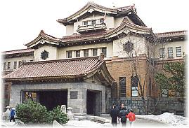2020年6月に渡航を目論み、ツアー予約までしたのだが「新型コロナウィルス」の世界的流行によりあえなくキャンセル。祖母・恵子の故郷でもある「真岡」という街（現在ではホルムスクという名称になっている）に行きたい。
NewYork
USA
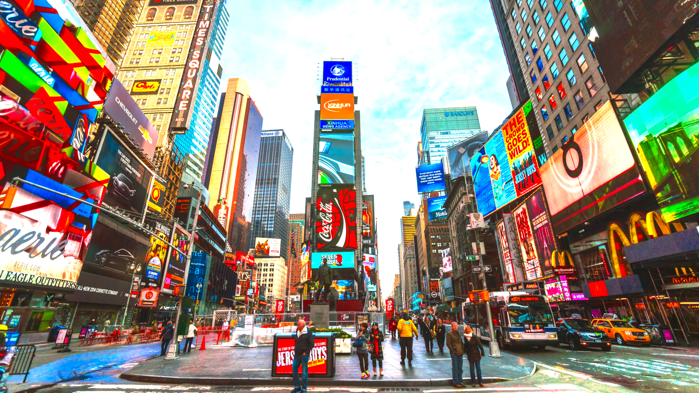海外旅行フリークならば一度は訪れてみたいベタな観光名所ニューヨーク。かつてジョンレノンが住んでいたダコタハウスはぜひ訪れたいところだ。自由の女神にもタイムズスクエアにもセントラルパークにも行ってみたい。とにかくアメリカ合衆国の象徴ともいえる名所なのでここにはのんびり長く滞在したいものである。
LosAngels
USA
LAには家族旅行で行ったことがあるがもう一度行きたい。LAには有名なギターショップであるNorman's Rare Guitarsがあるのだ。ただただシンプルにこのギターショップに行くためにLAを訪れたいのである。
KualaLumpur
Malaysia
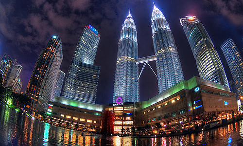マレーシアは若い国なのできっとそこにはパワーがあると思う。現代のマレーシアのシンボルでもあるペトロナスツインタワーにも行きたいし、歴史あるミステリアスなバトゥ洞窟も非常に魅力的だ。熱いアジアの勢いを感じたい。
Yangon
Myanmar
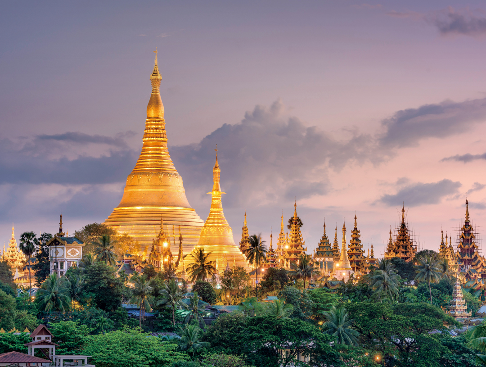僕は東南アジアの雰囲気が好きだ。タイにもシンガポールにもベトナムにもカンボジアにも行った。では次にどこに行きたいか？と考えると…ミャンマーに惹かれる。ヤンゴンという街がそこそこ観光地でもありよさげである。ヤンゴンのはずれにはチャイティーヨー・パゴダという巨大な黄金岩があり仏教の聖地とされている。実際に見てみたい。
Kaohsiung
Taiwan
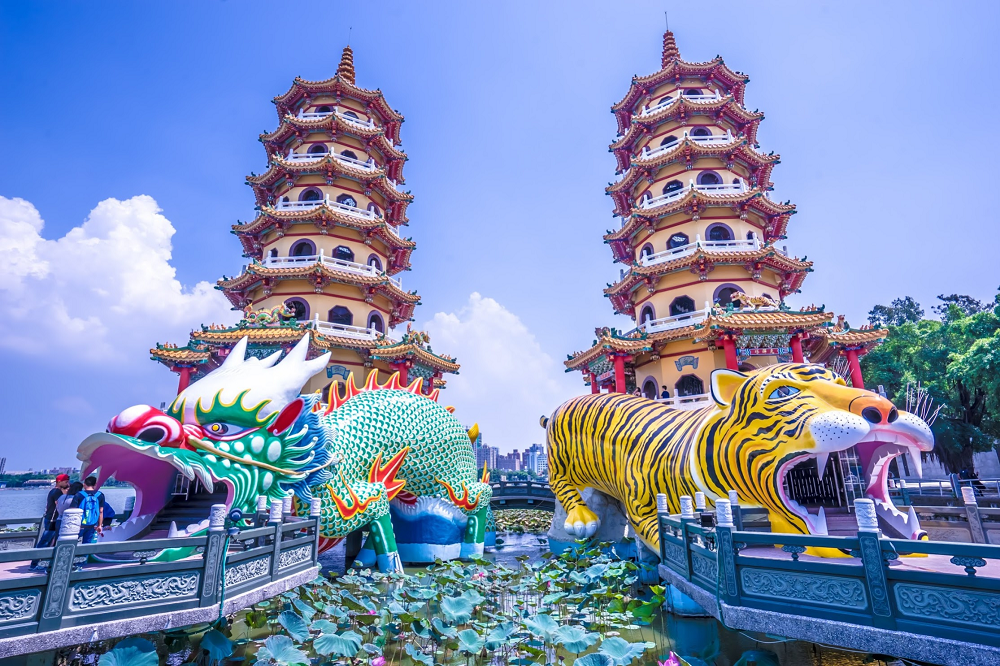台湾へは2018年に渡航した。前回は台北を訪れたので次回は高雄に行きたいと考えている。最近は各国の第二の都市に関心があり、第一の都市よりも観光地化されていない未開拓な感じが魅力的だと思う。高雄には龍虎塔というインスタ映えしそうな寺院があるのでここに訪れたいと考えている。
Busan
Republic of Korea
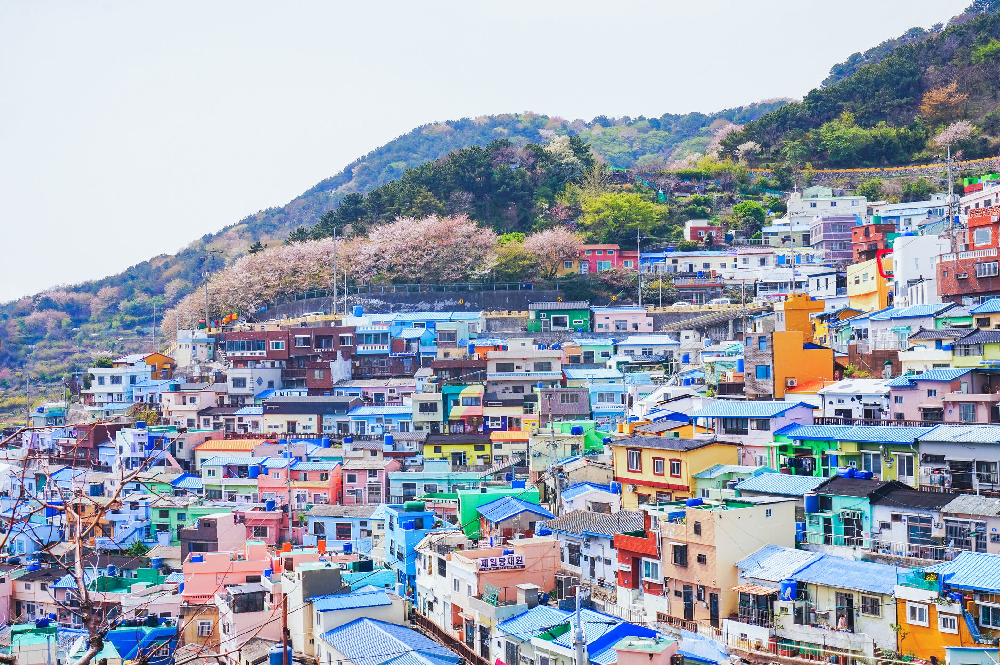韓国第二の都市として有名な「釜山」はどうやら噂によるとソウルよりも観光地化されていないので日本語表記の看板などもソウルに比べて少ないとのこと。韓国本来の雰囲気が味わえてとても良いのではないかと期待している。港町なのでチャガルチ市場での海鮮グルメも堪能できそう。
Ulaanbaatar
Mongolia
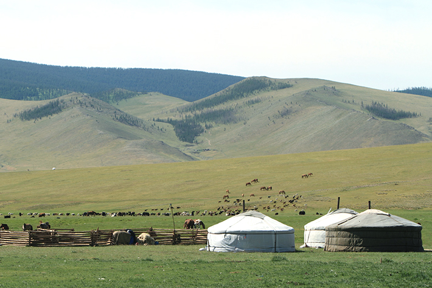アジア圏内で日本から近いわりに「モンゴル観光に行ってきた」という話はあまり聞かないので是非一度は行ってみたいと考えている。そして現地の広い野原で馬に乗ってみたい。よくよく考えると僕は海外に行ってよく動物に乗っている気がする…。
Agra
India
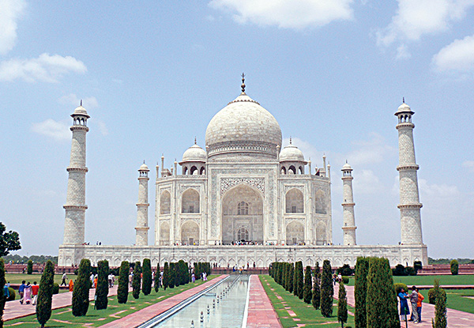さすがにバックパッカーとしてインド一人旅をするというのには多少…いや、かなりの抵抗があるので旅行会社のパックツアーで行こうと思う。タージマハル宮殿をはじめとして歴史的な建物が多いのが良いですね。日本とのカルチャーギャップを大いに楽しみたいものです。
Hanoi
Vietnum
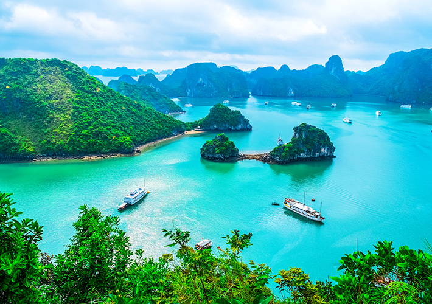ホーチミンに行ってみて、ベトナムは面白い場所だなぁと感じている。南北に長いベトナムの南にホーチミンがあり、北にはハノイがある。（ちなみにハノイのほうが首都）ハノイにはハロン湾という場所があり初期のドラゴンボールの舞台デザインのモデルになったとも言われている。ハロン湾クルーズを楽しみたい。
DaNang
Vietnum
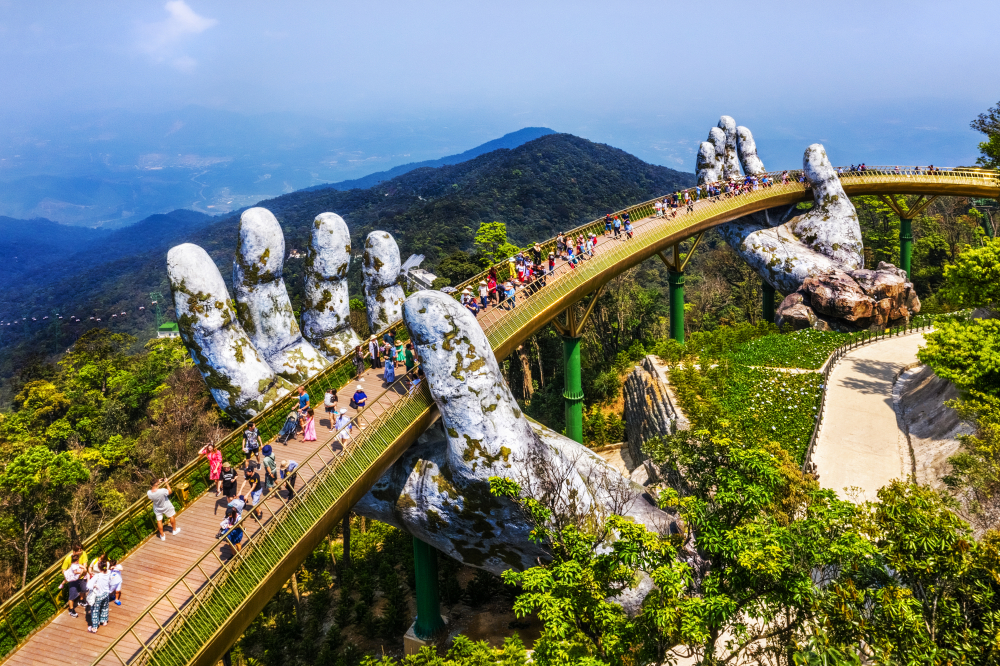ベトナムの北にはハノイ、南にはホーチミン。その中間あたりにビーチリゾートであるダナンがある。ダナンには古都ホイアンの跡があるので見どころはけっこう多いようだ。海水浴をするつもりはないが美しい海を見て風に吹かれてリフレッシュしたい。
Giza
Egypt
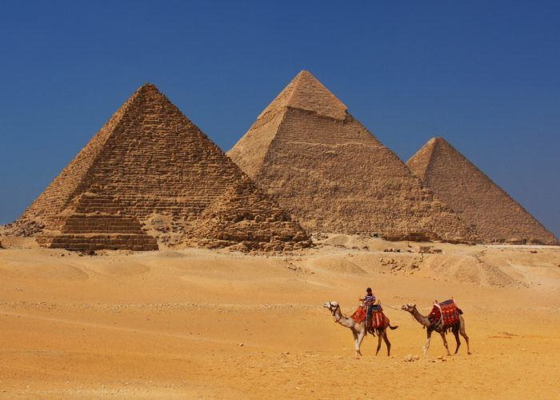アンコールワットに行ってみて感じたことだが、世界的に有名でベタな観光地を目の当たりにするとベタだけど感動する。王道の強さがそこにはあるような気がする。そう考えるとエジプトのピラミッドは実際に見てみたいと思う。きっとベタに感動するだろう。そしてピラミッド前でベタにラクダに乗って記念写真を撮りたい。